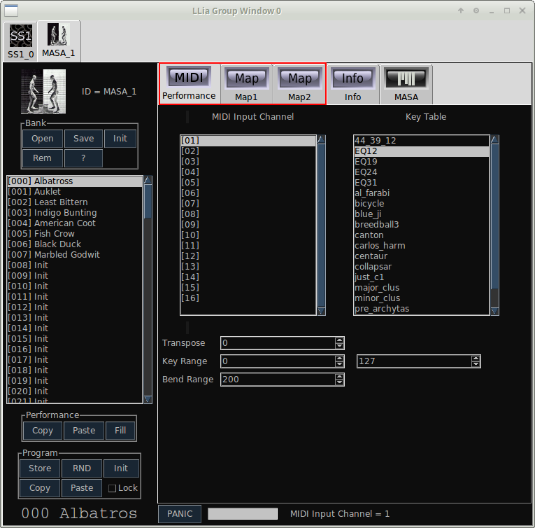
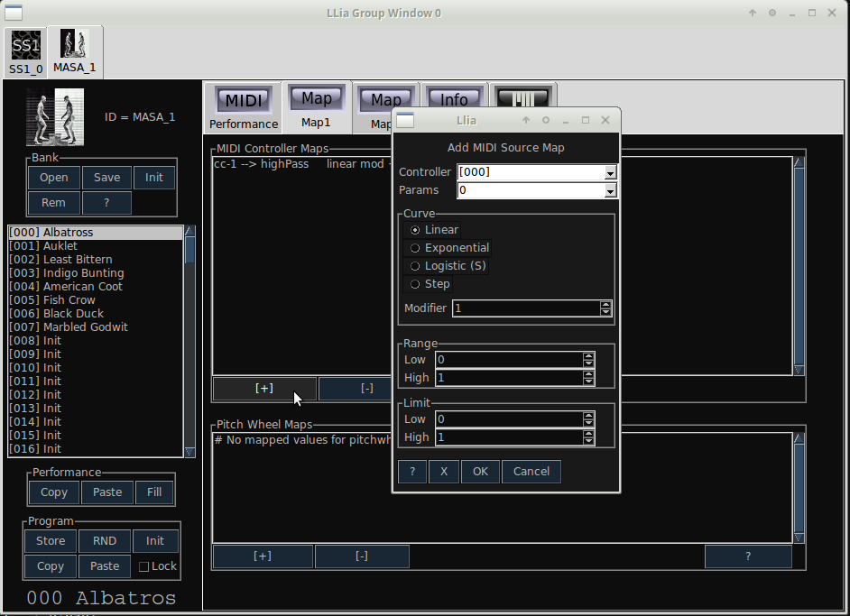
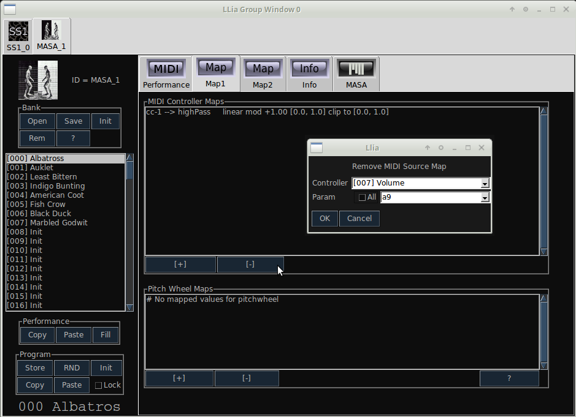

| Home | Contents | Synth Catalog | Previous: Graph | Next: Bank |
Llia supports a comprehensive MIDI implementation. All MIDI channel events, with the exception of polyphonic after touch and release velocity, are supported. There is an extensive mapping facility for translating MIDI data to synth parameters. Velocity, channel-pressure, pitch-bend, continuous controllers and MIDI key numbers may be mapped to any synth parameter. Each source may map to several parameters simultaneously, each with it's own set of range and transfer functions.
Each active synth has a dedicated bank of up to 128 programs. Each program stores specific patch values as well as most MIDI parameters. For example the modulation wheel may be mapped to vibrato for program 1 and to filter cutoff for program 2. The set of MIDI parameters within a program are called a Performance. Performances have identical structure across all Llia synths. It is possible to copy a performance from one synth into another, even if they are of different types. Any mapped parameters which are present for the source synth but missing in the destination are ignored. Identical performances may also be copied across several program bank slots.
MIDI and performance parameters are accessed by the MIDI, Map1 and Map2 tabs of a group window.
The MIDI tab contains both performance and non-performance values. The non-performance values (MIDI channel and Key Table) are not saved as part of a performance. All other parameters are saved as part of a Performance and may be different for each selected program.
The contents of the Map1 and Map2 tabs are nearly identical. The only differences are the types of MIDI data they contain. Map1 has controls for Continuous Controller and Pitch Wheel. Map2 contains mapping controls for Velocity, Aftertouch and Keynumber.
Adding or removing a map is (nearly) the same for all types of MIDI data. Continuous controller maps have an additional parameter to set the controller number, but otherwise is identical to the other data types.
To add a map click the [+] button in the appropriate section, which brings up new dialog to set mapping parameters.
A parameter map is removed by clicking an apropriate [-] button.
Parameter maps may be removed individually or wholesale by selecting the "All" checkbox.
How clear was all of that?| Home | Contents | Synth Catalog | Previous: Graph | Next: Bank |